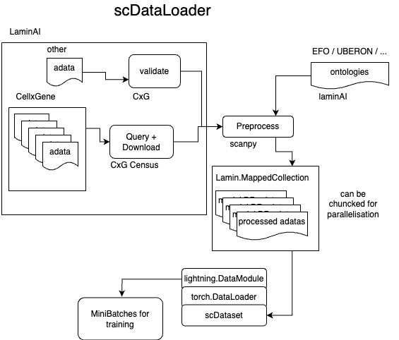

scdataloader


This single cell pytorch dataloader / lighting datamodule is designed to be used with:
and:
It allows you to:
- load thousands of datasets containing millions of cells in a few seconds.
- preprocess the data per dataset and download it locally (normalization, filtering, etc.)
- create a more complex single cell dataset
- extend it to your need
built on top of lamindb and the .mapped() function by Sergey: https://github.com/Koncopd
The package has been designed together with the scPRINT paper and model.
More
I needed to create this Data Loader for my PhD project. I am using it to load & preprocess thousands of datasets containing millions of cells in a few seconds. I believed that individuals employing AI for single-cell RNA sequencing and other sequencing datasets would eagerly utilize and desire such a tool, which presently does not exist.

Install it from PyPI
pip install scdataloader
# or
pip install scDataLoader[dev] # for dev dependencies
lamin login <email> --key <API-key>
lamin init --storage [folder-name-where-lamin-data-will-be-stored] --schema bionty
if you start with lamin and had to do a lamin init, you will also need to populate your ontologies. This is because scPRINT is using ontologies to define its cell types, diseases, sexes, ethnicities, etc.
you can do it manually or with our function:
from scdataloader.utils import populate_my_ontology
populate_my_ontology() #to populate everything (recommended) (can take 2-10mns)
populate_my_ontology( #the minimum for scprint to run some inferences (denoising, grn inference)
organisms: List[str] = ["NCBITaxon:10090", "NCBITaxon:9606"],
sex: List[str] = ["PATO:0000384", "PATO:0000383"],
celltypes = None,
ethnicities = None,
assays = None,
tissues = None,
diseases = None,
dev_stages = None,
)
Dev install
If you want to use the latest version of scDataLoader and work on the code yourself use git clone and pip -e instead of pip install.
git clone https://github.com/jkobject/scDataLoader.git
pip install -e scDataLoader[dev]
Usage
Direct Usage
# initialize a local lamin database
# !lamin init --storage ~/scdataloader --schema bionty
from scdataloader import utils
from scdataloader.preprocess import LaminPreprocessor, additional_postprocess, additional_preprocess
# preprocess datasets
DESCRIPTION='preprocessed by scDataLoader'
cx_dataset = ln.Collection.using(instance="laminlabs/cellxgene").filter(name="cellxgene-census", version='2023-12-15').one()
cx_dataset, len(cx_dataset.artifacts.all())
do_preprocess = LaminPreprocessor(additional_postprocess=additional_postprocess, additional_preprocess=additional_preprocess, skip_validate=True, subset_hvg=0)
preprocessed_dataset = do_preprocess(cx_dataset, name=DESCRIPTION, description=DESCRIPTION, start_at=6, version="2")
# create dataloaders
from scdataloader import DataModule
import tqdm
datamodule = DataModule(
collection_name="preprocessed dataset",
organisms=["NCBITaxon:9606"], #organism that we will work on
how="most expr", # for the collator (most expr genes only will be selected)
max_len=1000, # only the 1000 most expressed
batch_size=64,
num_workers=1,
validation_split=0.1,
test_split=0)
for i in tqdm.tqdm(datamodule.train_dataloader()):
# pass #or do pass
print(i)
break
# with lightning:
# Trainer(model, datamodule)
see the notebooks:
command line preprocessing
You can use the command line to preprocess a large database of datasets like here for cellxgene. this allows parallelizing and easier usage.
scdataloader --instance "laminlabs/cellxgene" --name "cellxgene-census" --version "2023-12-15" --description "preprocessed for scprint" --new_name "scprint main" --start_at 10 >> scdataloader.out
command line usage
The main way to use
please refer to the scPRINT documentation and lightning documentation for more information on command line usage
FAQ
how to update my ontologies?
import bionty as bt
bt.reset_sources()
# Run via CLI: lamin load <your instance>
import lnschema_bionty as lb
lb.dev.sync_bionty_source_to_latest()
how to load all ontologies?
from scdataloader import utils
utils.populate_ontologies() # this might take from 5-20mins
Development
Read the CONTRIBUTING.md file.
License
This project is licensed under the MIT License - see the LICENSE file for details.
Acknowledgments
Awesome single cell dataloader created by @jkobject